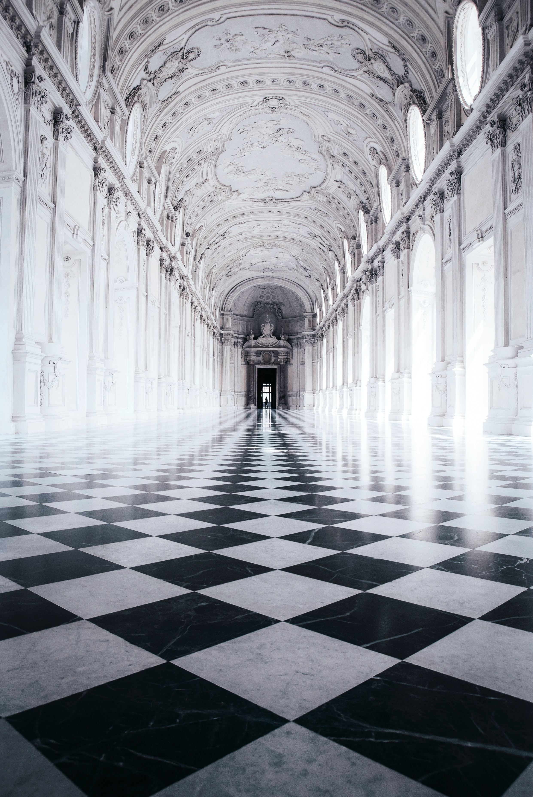
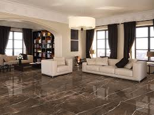
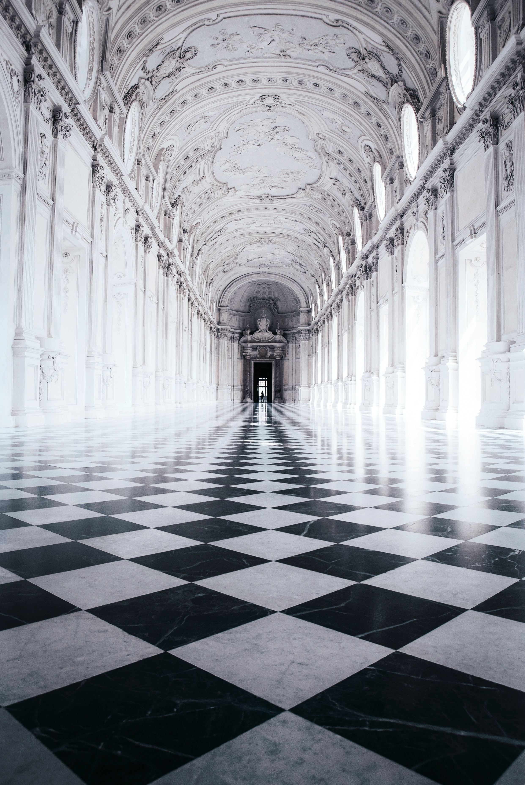
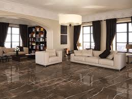

WE ARE REASONABLE PRICE AND GOOD WORK
Our Devon Metallic Bronze Subway Tile is the perfect choice for a backsplash. These shimmering tiles have a dark, shadowy bronze finish. Due to their uneven surface, the light reflects off them in unique ways, so they look different from every angle. It means you will find a new detail to love every time you enter the kitchen! The irregular edges and uneven colour also give them a handcrafted appearance, creating a rustic effect. Have you chosen your favourite trend? Transform your bathroom or kitchen this year by shopping online or visiting one of our showrooms. Our team will be happy to offer you tips and advice on the most popular tile trends for 2023! For Tileshack showroom opening hours and locations,
The most popular way to create this pattern is with Metro Tiles. Whether you are after a classic or contemporary look, chevron metro tiles will transform any room. Soft-coloured tiles are elegant and sophisticated, while bold colours create a more dramatic, modern look. Want the chevron look with less effort? Chevron Mosaic Sheets are perfect for creating a feature wall. Alternatively, create the pattern on the floor with one of our Chevrons Wood Effect Tiles. Tiled Wet Rooms Wet Rooms are becoming increasingly popular in new builds and contemporary bathrooms. Thanks to their open design, wet rooms are more accessible and bring spa luxury to your bathroom. They also create the illusion of more space, making your bathroom feel bigger, airier, and more relaxing.
.jpeg)

.jpeg)
 



We recommend tiling a wet room with Mosaic Tiles. They are small and have prominent grout lines, so they create texture and visual appeal in a wet room. Use them to tile the floor, wall, or a shower niche if you have one (i.e., a cubbyhole built into the wall). Our mosaic sheets are highly versatile and easy to install. Made from glass, porcelain, or ceramic, they come in a wide range of colours and patterns. Vertical Metro Tiles Subway metro tiles are an absolute classic that never goes out of style! In 2023, laying them vertically will be more popular than the traditional horizontal layout. Not only does this create a fresh, unique look, but it also makes the space look taller by drawing the eye upward. For example, use the vertical layout for the whole wall behind your kitchen countertops instead of just sticking to a backsplash. Our metro tiles come in a huge range of colours from pink and blue to classic white and statement black, so choose one that best suits the style of the room. To allow your vertical tiles to stand out, we pair them with large-format floor tiles.